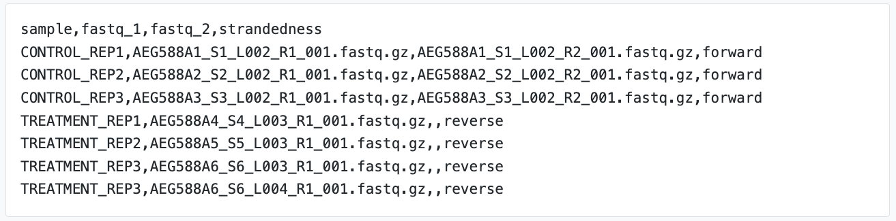
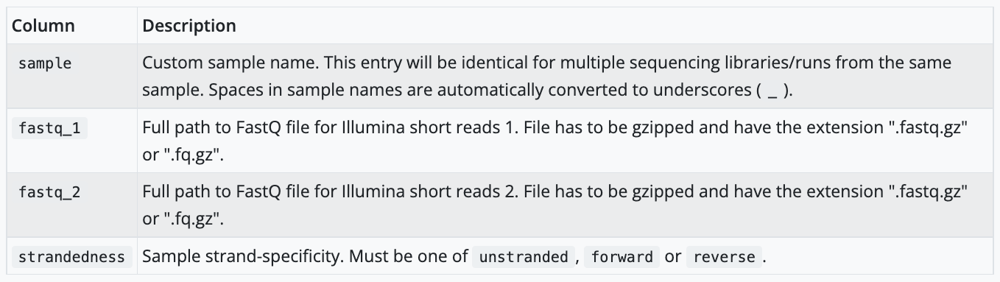
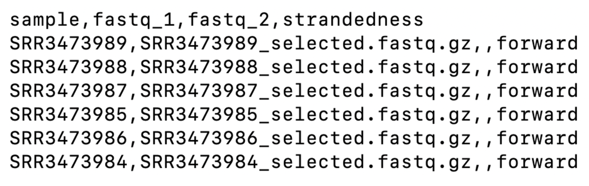

Prepare your data for processing
Questions
- How do I set up my base directory?
- How do I download the required input files?
In this workshop series we are working with a real dataset from a study of a knockout mouse model by Corley et al. (2016). Before we can get started, we need to download the materials used in this workshop and organise our working space on the command line.
grey boxes on training materials
In this workshop we need to copy code from the grey boxes in the training materials and run it in the terminal. If you hover your mouse over a grey box on the website, a clipboard icon will appear on the right side. Click on the clipboard logo to copy the code. Test it out with:
ssh training@###.###.###.###Log in to Nimbus
Go to the terminal window in which you have logged on to Nimbus. If you have accidently closed it, you will need to repeat steps on the setup page again. Check where you are by typing:
pwdIt should return /home/training. To get back here at any point, you can always type:
cd ~Make your base directory
This is where we will be working for the next 2 days. In your terminal once you have logged into Nimbus and are sure you’re in /home/training, type the following:
mkdir base_directoryDownload the files to be used in this workshop
In your terminal, type the following to move into to the base_directory:
cd base_directoryThen type the following to download the input files: GS- ADD CLOUDSTOR LINK WITH FINAL MATERIALS
cloudstor link to addThe files are packaged up to save space. Let’s unpack it:
tar -zxvf working_directory.tar.gzThis creates a directory called working_directory. Move into this directory by running:
cd working_directoryYou can list all the files in your current directory by running the list command:
ls -lhIt should return this:
-rw-------@ 1 training training 919K 22 Apr 15:11 FULL_count_matrix.txt
-rw-------@ 1 training training 1.3K 30 Aug 11:53 README
-rwxr-xr-x@ 1 training training 3.4M 28 Jul 06:11 SRR3473984_selected.fastq.gz
-rwxr-xr-x@ 1 training training 3.1M 28 Jul 06:11 SRR3473985_selected.fastq.gz
-rwxr-xr-x@ 1 training training 3.0M 28 Jul 06:11 SRR3473986_selected.fastq.gz
-rwxr-xr-x@ 1 training training 3.3M 28 Jul 06:11 SRR3473987_selected.fastq.gz
-rwxr-xr-x@ 1 training training 4.2M 28 Jul 06:11 SRR3473988_selected.fastq.gz
-rwxr-xr-x@ 1 training training 3.0M 28 Jul 06:11 SRR3473989_selected.fastq.gz
-rw-------@ 1 training training 4.8K 28 Jul 06:11 nextflow.config
-rw-r--r--@ 1 training training 18K 30 Aug 11:33 rnaseq_DE_analysis_Day2.Rmd
-rw-r--r--@ 1 training training 5.0M 30 Aug 11:37 rnaseq_DE_analysis_Day2.html
-rw-------@ 1 training training 330B 28 Jul 07:25 samplesheet.csvThe working_directory folder contains the following files:
- 6 gzipped fastq files:
SRR*_selected.fastq.gz - A samplesheet file required by the nf-core/rnaseq pipeline:
samplesheet.csv - The nf-core/rnaseq pipeline configuration file:
nextflow.config
- The genome-wide gene count matrix file for day 2:
FULL_count_matrix.txt
- The lessons and code for day 2:
rnaseq_DE_analysis_Day2.Rmdandrnaseq_DE_analysis_Day2.html
Look at the sample sheet
A sample sheet is a standard input rquirement of nf-core pipelines, including nf-core/rnaseq. This sheet contains information on each sample being processed with this pipeline. Take a look at the nf-core/rnaseq documentation for more information. For example:

The sample sheet we are using today contains a header row and one row per sample being processed. It has 4 columns, each separated by the comma. The pipeline will auto-detect whether a sample is single- or paired-end using the information provided in the samplesheet. The samplesheet can have as many columns as you desire, however, there is a strict requirement for the first 4 columns to match those defined in the table below:

Challenge
Can you view the provided sample sheet using the cat command and identify differences between our sheet the one shown in the example screenshot above?
Solution
View samplesheet.csv by running:
cat ~/base_directory/working_directory/samplesheet.csv Our sample sheet looks like this: 
Both sample sheets contain 6 samples. However, the example samplesheet consists of both single- and paired-end data for the control samples and TREATMENT_REP3 has been sequenced twice.
Our sample sheet is a lot simpler, with only single-end reads. Note that the column for the reverse-reads is empty in our sample sheet.
Now that we have prepared our work space and downloaded the required files, we will proceed to running the nf-core/rnseq pipeline. Before proceeding:
Check your path by running:
pwdThis should return: /home/training/base_directory/working_directory. If you are not here, move into the above path by running:
cd /home/training/base_directory/working_directory
Keep your terminal window open and proceed to the next lesson by clicking on Day 1 kick off > Run the pipeline on the menu bar.
Key points
- Organise your working space on the command line using directories
- The nf-core/rnaseq pipeline requires raw sequence data in the fastq format
- We can tell nf-core/rnaseq which fastq files belong to which sample using the sample sheet
All materials copyright Sydney Informatics Hub, University of Sydney